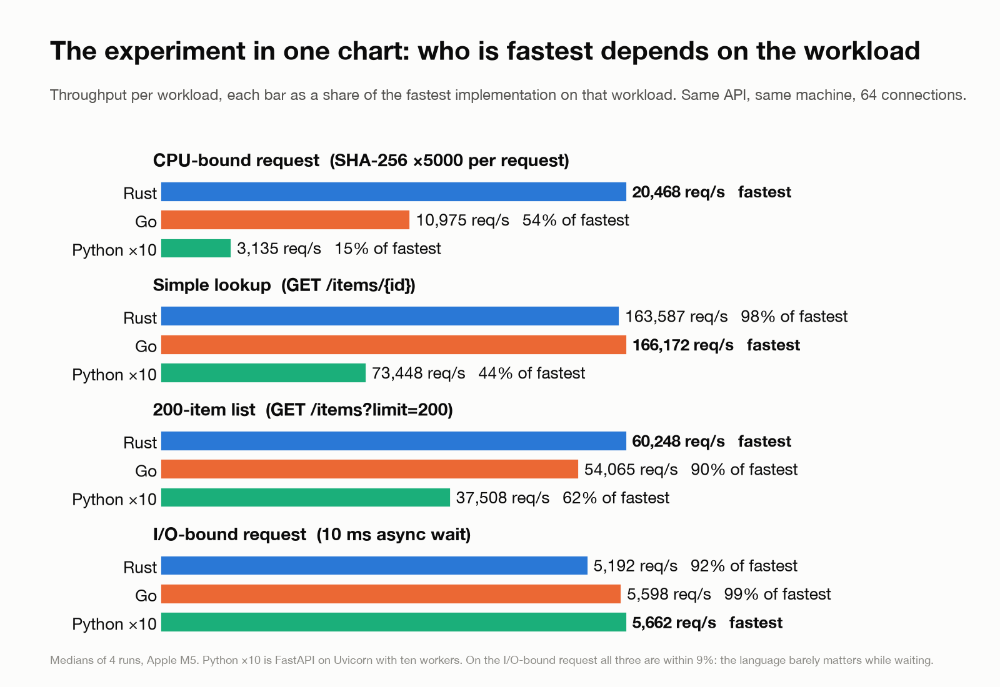
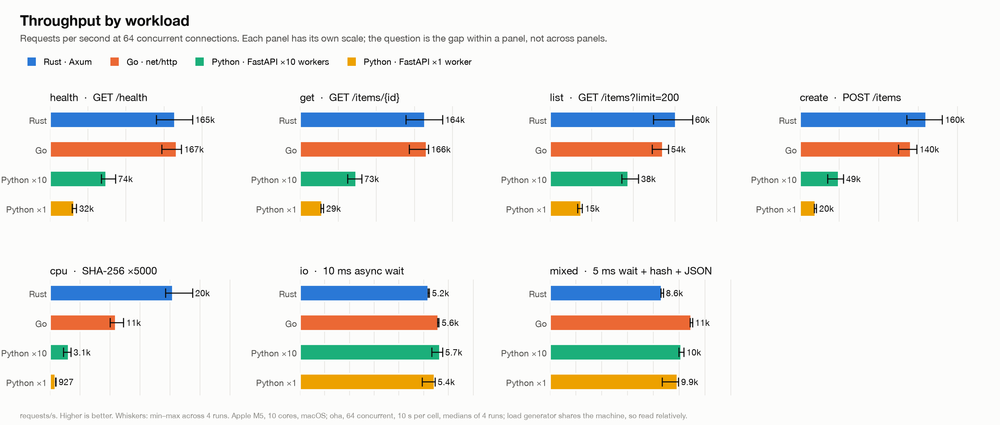
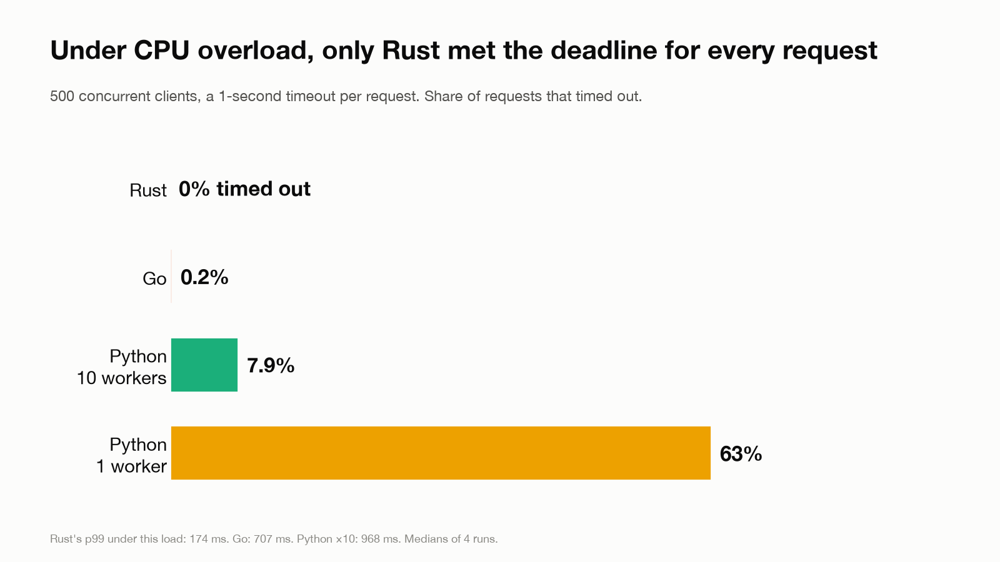
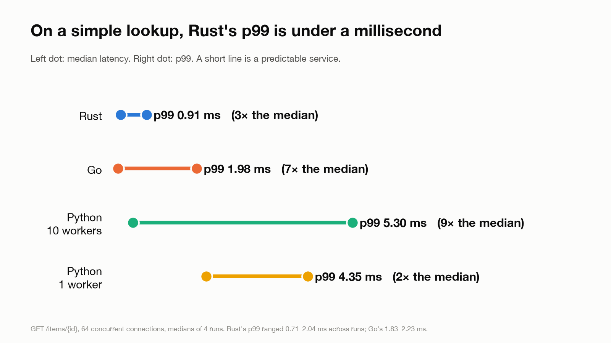
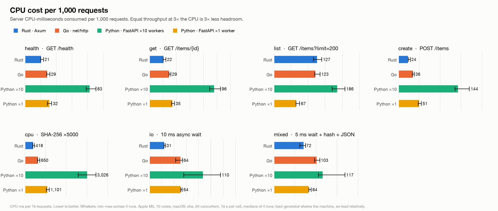
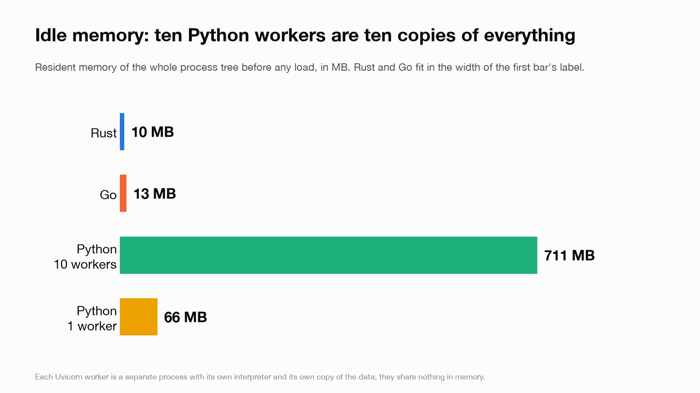
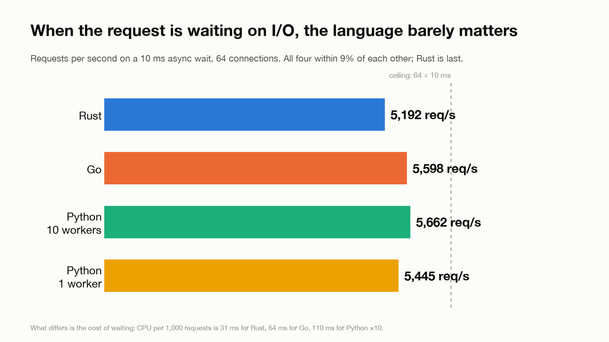
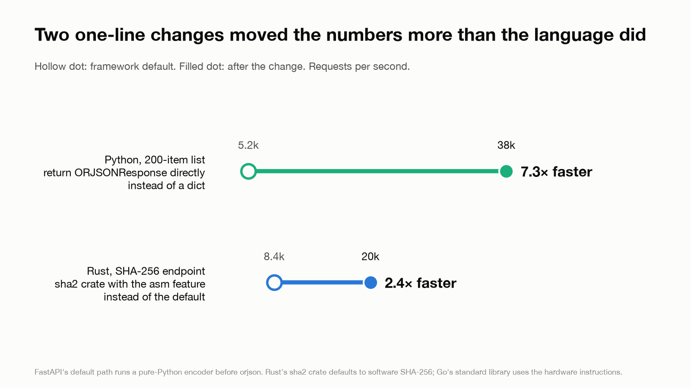
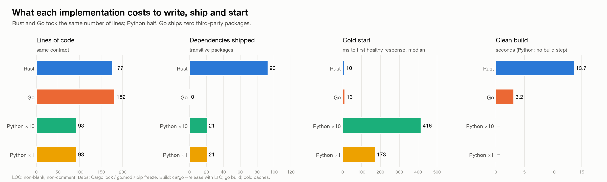

Benchmarking API Performance: Python vs Go vs Rust
Same API, three production stacks, nine metrics. Where Rust actually matters, and where it doesn't. I built the same API in Rust, Go and Python with each ecosystem's production stack, wrote down six hypotheses, and measured seven workloads on nine metrics across 4 full runs. Rust wins on CPU-bound work and tail latency, the language barely matters when the request is waiting on I/O, and two one-line changes moved the numbers more than the language did.
Why I did this
On 25 November 2026 Anthropic published Migrating our Messages API to Rust, describing a full rewrite of their Messages API from Python to Rust. The numbers they report are the kind that get a language chosen: about 70% less CPU per request, more than 80% less memory per request, and roughly 20% lower median time to first token, after public traffic moved to Rust in September 2026. Their CPU figure is for one region and their latency figure is from a subset of Claude Code traffic, and their post is about the verification work far more than about Rust itself. It is a production migration at a scale where traffic had grown roughly 1,800× in under three years.
That post made me want to know the shape of that gain. "Rust is faster than Python" is true and useless. Which kinds of request get faster, by how much, which parts of the gain are the language, which parts are the runtime, which parts are a library choice, and what does it cost in code, dependencies and build time? Those questions can be answered at small scale, on one machine, with everything else held constant. So I held everything else constant.
What this is and is not. This is a lab benchmark: one laptop, seven synthetic endpoints, ten seconds of load per cell, an in-memory store instead of a database. It is not the production traffic of a large service, and nothing here predicts what a migration like Anthropic's would yield. What it can do is isolate where the differences come from, which production numbers cannot.
The setup
Same contract, three implementations
| Implementation | Stack | Lines | Deps |
|---|---|---|---|
| Rust | Axum 0.8 on Tokio, serde_json, sha2 with the asm feature | 177 | 93 crates |
| Go | Standard library net/http with Go 1.22 routing, encoding/json, crypto/sha256 | 182 | 0 |
| Python ×10 | FastAPI on Uvicorn with uvloop, httptools and orjson; ten workers, one per core | 93 | 21 packages |
| Python ×1 | The same code, one worker, so the cost of scaling Python stays visible | 93 | 21 packages |
The four rows are not all the same comparison. Rust, Go and single-worker Python each run one process with one store and one lock, so every request sees every write: that is the identical-semantics comparison and the fair application-level one. Ten-worker Python is the native-deployment comparison: it is how FastAPI is actually run on a ten-core box, and it has ten stores and ten locks, so its write numbers carry a weaker consistency guarantee (more on that below). Read the Python ×1 row against Rust and Go for fairness, and the Python ×10 row for what you would deploy.
Every implementation serves the contract in docs/API.md: a store seeded with 10,000 items, and seven endpoints that each isolate one thing an API service spends time on.
| Scenario | Endpoint | What it isolates |
|---|---|---|
health | GET /health | The framework and HTTP stack floor |
get | GET /items/{id} | Routing, a shared-state read, a small JSON encode |
list | GET /items?limit=200 | Serializing 200 objects |
create | POST /items | JSON decode, validation, a write under a lock |
cpu | GET /compute/hash?n=5000 | 5,000 chained SHA-256 rounds on the request path, no I/O |
io | GET /io/wait?ms=10 | A 10 ms async wait, no CPU |
mixed | GET /mixed | A 5 ms simulated database wait, 200 hash rounds, JSON |
What the harness measures
- Throughput and latency (p50, p95, p99, p99.9, max) from
ohaat 64 concurrent connections, 10 seconds per cell after a 3-second warm-up, in a fresh process per scenario so that the write-heavycreatecannot inflate the memory of what runs after it. - Peak memory as resident set size summed over the process tree, sampled four times a second. Summing matters: ten Python workers are ten processes.
- CPU per 1,000 requests from the process tree's CPU time delta across the run divided by completed requests. Equal throughput at 3× the CPU is 3× less headroom, so this is the cost side of every throughput number.
- Cold start: process launch to first
200from/health, polled every 2 ms, median of five starts. - Error rate under saturation: dedicated runs at 1,000 and 500 concurrent connections with a 1-second per-request timeout. Timeouts, resets, refused connections and non-2xx responses all count.
- Memory per open connection: 1,000 keep-alive connections opened, one request each, held idle; the RSS growth divided by 1,000.
- Recovery after a spike: probe latency from one client, a 5-second spike at 256 connections, probe again, 10 seconds idle, probe again, and how much of the spike's memory growth was still held.
- Implementation complexity: lines for the identical contract, transitive dependencies, clean build time, artifact size, and the behaviour that differs despite the shared contract.
One shared contract test, plain Python with no dependencies, runs against every implementation before the harness will benchmark it. If two implementations answer the same request differently, their numbers are not comparable, so the harness refuses. All of this ran on Apple M5 with 10 cores, with the load generator on the same machine. That understates every absolute number equally; read everything as relative. The numbers below are medians of 4 full runs; the report in the repo shows the min–max spread for every cell.
Six hypotheses, written before the first run
The point of writing them down first is to find out which ones are wrong.
| # | Hypothesis | Verdict |
|---|---|---|
| 1 | CPU-bound work: Rust and Go an order of magnitude ahead of Python; Rust leads Go by a small constant | Mostly right, with a twist. Rust leads Go by 1.9×, not a small constant, and only after a library flag. With the sha2 crate's default software SHA-256, Rust was slower than Go. |
| 2 | I/O-bound work: all three converge; the differences are memory and tail, not throughput | Confirmed, and Rust was the slowest. |
| 3 | Serialization: Rust > Go > Python, but orjson narrows the gap more than people expect | Confirmed, dramatically, once FastAPI's default response path was bypassed. |
| 4 | Tail latency: Rust has the flattest p99/p50; Go's tail shows the GC; Python degrades fastest | Tail confirmed; the GC explanation was not. A run with Go's collector off did not flatten its tail. |
| 5 | Memory: Rust < Go ≪ Python × workers; the ratio matters for density | Confirmed at the baseline, wrong per connection. Rust is the heaviest per idle connection. |
| 6 | Engineering cost: Rust costs the most lines and the longest build | Half right. Rust and Go cost the same lines; Rust's cost is the dependency graph and the build. |
The experiment in one chart

Read it top to bottom. On CPU-bound work Rust is well ahead. On a simple lookup Rust and Go are tied (1.0× across four runs). On a request that is waiting on something, all three are within 9% and Rust is last. The language does not decide how fast a waiting request goes. It decides what it costs while it waits, and that is where Rust's edge over Go lives: in p99, CPU per request and memory, not in requests per second on ordinary endpoints.
Where Rust wins
1. CPU on the request path

On 5,000 rounds of SHA-256 per request, Rust served 20,468 requests a second (19.2k–23.7k across runs). Go served 10,975, ten-worker Python 3,135, one-worker Python 927. That is 1.9× Go and 6.5× Python with every core lit. Ten Python workers gave 3.4× the throughput of one, not 10×, because each worker's threadpool still serialises on its own GIL and the ten processes contend with each other and with the load generator.
Past saturation is where the difference stops being a factor and becomes a behaviour:

Rust missed the deadline on 0 requests in every run, with a p99 of 174 ms. Go missed 0.21% with a p99 of 707 ms. Ten-worker Python missed 7.95% at the median and anywhere from 0.45–21.47% run to run; one-worker Python 63.30%. The detail I find most interesting: Go's median under overload (69 ms) is close to Rust's (59 ms) while its p99 is 707 ms against 174. One hypothesis is scheduling: Go keeps most requests moving and lets a tail of them wait out the deadline, while Tokio's work-stealing spreads the delay evenly across every in-flight request. I have not profiled either runtime to confirm that, so treat it as the next thing to check, not a finding. What is measured is the shape: if you have an SLO, evenly is what you want.
Under connection overload rather than CPU overload (1,000 concurrent clients on the lookup endpoint), Rust, Go and ten-worker Python all served every request. Single-worker Python timed out 2.31%.
2. Tail latency

On the lookup endpoint, Rust's p99 is 0.91 ms and 2.6× its median. Go's is 1.98 ms at 6.5×. Ten-worker Python's is 5.30 ms at 8.5×. Rust's lookup p99 ranged from 0.71–2.04 ms across the four runs, so its median is the fair number and the comparison holds at the worst run too. Single-worker Python has a flat tail (2.0×) but a median six times higher, which is a different kind of slow. Go's p95 is 0.89 ms against a 0.30 ms median. My first draft blamed the garbage collector; the counterfactual below says otherwise. On the CPU endpoint the gap between Go's median and its p99 opens to 23.8× (1.60 ms to 38.16 ms); Rust's stays at 2.0×. If your SLO is written against p99 rather than the median, Rust is the only one of the three whose tail stays flat under load.
3. Density: CPU and memory per request

Per 1,000 lookups, Rust spends 22 ms of CPU, Go 29, ten-worker Python 96. On the I/O endpoint, where throughput is equal, the CPU cost is not: Rust 31 ms, Go 64, Python 110. That is the number Anthropic's 70% is made of.

Idle memory: Rust 9.9 MB, Go 13.4 MB, one Python worker 66.0 MB, ten Python workers 710.7 MB, which is 72× Rust. Under load Rust holds 13 to 15 MB where Go holds 2.2× that and ten-worker Python 53.8×. Across a fleet, that is the bill.
Where Rust does not win
I/O-bound endpoints

On the 10 ms wait, all four implementations land between 5.2k and 5.7k requests per second, a spread of 9%, with p99 between 12.7 and 14.6 ms. The theoretical ceiling with 64 connections and a 10 ms wait is 6,400 per second, and everyone is near it. Rust is last. Tokio's sleep(10 ms) completes in about 12.3 ms on this macOS build even with a single connection, while Go's timer and uvloop's sleep for about 11.3 ms. The mixed endpoint tells the same story: Go 10.9k, Python 10.2k, Rust 8.6k requests per second. If your service is "call the database and return the result", Rust buys you 2.1× to 3.5× less CPU and 2.0× to 54.7× less memory while you wait. It does not buy you speed.
Serialization
On the 200-item list, Rust is 1.1× Go and 1.6× tuned Python (60.2k vs 54.1k vs 37.5k requests per second). Serde is fast; so are encoding/json and orjson. Serialization alone is not a reason to choose Rust.
Memory per connection
This inverted my hypothesis. Holding 1,000 idle keep-alive connections cost Rust 31.6 KB each, Go 22.9 KB, ten-worker Python 18.5 KB, single-worker Python 11.8 KB. Hyper's per-connection buffers are the largest of the three. For a 100,000-connection streaming fan-out that is 3.2 GB versus 2.3 GB versus 1.9 GB, which is to say none of them is the bottleneck; the fixed cost is.
Two one-line changes

I kept the first run, with every framework at its defaults, in the repo on purpose, because the gap between it and the final numbers is a result.
FastAPI. In the baseline, Python's list endpoint was 14× slower than Rust and burned 1.7 ms of CPU per request. That is not orjson being slow. A handler that returns a dict goes through FastAPI's pure-Python jsonable_encoder before the response class serializes it, and on 200 dicts that pass costs more than everything else in the request combined. Returning ORJSONResponse(...) directly from the handler skips it. One line per handler took Python's list throughput from 5.2k to 37.5k requests per second (7.3×) and the gap to Rust from 14× to 1.6×. If you run FastAPI in production and have never checked which path your responses take, check.
Rust. In the baseline, Rust was slower than Go on the CPU endpoint: 8.4k requests per second against 14.7k. Go's standard-library crypto/sha256 uses the ARM SHA-2 instructions out of the box. Rust's sha2 crate defaults to a software implementation. Enabling its asm feature took Rust to 20.5k (2.4×) with an identical digest. The language sets the ceiling; the library decides whether you reach it, and Go's standard library reaches it by default more often than Rust's crate ecosystem does.
Things I did not expect
Ten-worker Python has no shared memory, so it is a different comparison. The contract test found this before the benchmark did: an item created with a POST on one Uvicorn worker is a 404 on the other nine (1 hit in 10). Python's only route to all ten cores is ten processes, which means ten copies of every in-memory structure and no shared state without Redis or a database round-trip that Rust and Go do not need for the same feature. This is the biggest practical difference in the study and it is architectural, not a benchmark number. It also means the ten-worker create figures are not the same guarantee as the other three: ten process-local locks are not one shared lock. The single-worker row is the like-for-like comparison; the PostgreSQL phase will give all four the same semantics.
- Nobody has a latency hangover, and memory retention is too noisy to rank. After the 5-second spike, the first probe's p99 was back at the pre-spike level for all four (Rust 0.16 → 0.11 ms, Go 0.18 → 0.13 ms). I had hoped to show which runtime gives memory back to the OS after a spike; the 10-second measurement does not support a ranking. Medians say Rust held 79% of the spike's growth, Go 98%, ten-worker Python 100% and single-worker Python ended below where it started, with run-to-run swings larger than the differences between them. What is consistent: the growth itself is small (13.0 MB for Rust, 22.8 MB for Go, 11.4 MB for ten Python workers) and none of them hands much back within 10 seconds.
- Turning off Go's garbage collector did not flatten its tail. The cheapest test of the GC explanation is the same binary with
GOGC=off. Lookup p99 got worse in both runs (2.6 → 3.0 ms, 5.1 → 7.5 ms); on the CPU endpoint p95 fell by about a quarter while the median tripled and p99 barely moved. So the collector is at most a minor contributor, and the tail comes from something this harness cannot separate: scheduler behaviour, netpoll and syscall timing, lock contention, or allocation without reuse (the heap grew to 2 GB with the collector off, which is itself a confound). The right tools arepprof, Go's execution tracer and Tokio's runtime metrics; until that work is done, every "why" in this post is a hypothesis. The numbers are in the repo. - Python's per-request CPU is close to Go's; its scaling is the cost. One Python worker spends 32 ms of CPU per 1,000 health checks; Go spends 29; Rust 21. uvloop, httptools and orjson are C, and the Python on the request path is thin. At ten workers the same code costs 83 ms per 1,000, because ten processes contend for ten cores with each other and with the load generator. The CPU columns for saturated runs include that contention for every implementation.
- Per-item storage cost (RSS growth per inserted item on
create): Rust 346 bytes, Go 397, Python 486. A RustStringplusVec<String>per item is the leanest; a Python dict per item costs about twice as much. - Same contract, different error shapes. A non-numeric path id is a 400 with a plain-text message from Axum, a 400 JSON object from Go because I wrote it, and a 422 with a Pydantic error array from FastAPI. Wrong field types: Axum 422 as text, Go 400, FastAPI 422 as JSON. Go is the only one where every byte of the error surface is yours; the other two give you a framework's shape unless you override it.
- Tokio's timer overshoots on macOS. A 10 ms sleep takes 12.3 ms at concurrency 1 and 12.3 ms at concurrency 64, so it is timer resolution, not load. I expect Linux to behave differently and have not checked.
What it costs

Rust and Go took the same number of lines for the same contract: 177 and 182. Python took 93. Rust ships 93 transitive crates; Go ships 0; Python 21 packages. A clean release build is 13.7 s for Rust with LTO on and 3.2 s for Go, and the gap widens with project size. Artifacts are 1.3 MB and 9.3 MB. Cold start to first healthy response: 10 ms for Rust, 13 ms for Go, 173 ms for one Python worker, 416 ms for ten.
Go is the honest competitor in this study. On ordinary endpoints its throughput is a tie with Rust: 166.2k against 163.6k requests per second on the lookup, within 10% on the list and the write. Its gaps are the CPU ceiling (1.9×), the p99 (2.2× on the lookup, 6.2× under CPU load), and the per-request CPU and memory (1.4× and 2.2×), all with zero dependencies, a 3.2-second build and the same line count. The reason to pick Rust over Go is the ceiling and the tail, not the throughput on the endpoints most services are made of.
Every number in one place
Medians of 4 runs. The full report with p95, p99.9, max, CPU utilisation, memory growth per request and the min–max spread per cell is in the repo.
| Scenario | Rust req/s | Go | Python ×10 | Python ×1 | Rust p99 ms | Go | Python ×10 | Python ×1 |
|---|---|---|---|---|---|---|---|---|
| health | 164,679 | 166,922 | 74,144 | 31,620 | 1.02 | 2.01 | 5.97 | 3.93 |
| get | 163,587 | 166,172 | 73,448 | 28,809 | 0.91 | 1.98 | 5.30 | 4.35 |
| list | 60,248 | 54,065 | 37,508 | 14,943 | 2.34 | 6.17 | 8.00 | 8.29 |
| create | 160,374 | 140,492 | 49,180 | 19,738 | 0.83 | 2.13 | 6.23 | 6.29 |
| cpu | 20,468 | 10,975 | 3,135 | 927 | 6.16 | 38.16 | 53.84 | 78.66 |
| io | 5,192 | 5,598 | 5,662 | 5,445 | 13.60 | 12.70 | 12.79 | 14.58 |
| mixed | 8,641 | 10,940 | 10,174 | 9,880 | 9.20 | 7.81 | 8.07 | 8.20 |
| Scenario | Rust CPU ms/1k | Go | Python ×10 | Python ×1 | Rust peak MB | Go | Python ×10 | Python ×1 |
|---|---|---|---|---|---|---|---|---|
| health | 21 | 29 | 83 | 32 | 13.2 | 30.0 | 722.2 | 69.2 |
| get | 22 | 29 | 96 | 35 | 13.4 | 29.8 | 719.3 | 67.6 |
| list | 127 | 123 | 186 | 67 | 15.2 | 30.2 | 716.7 | 67.7 |
| create | 24 | 36 | 144 | 51 | 824.9 | 777.3 | 987.1 | 202.8 |
| cpu | 418 | 650 | 3,026 | 1,101 | 13.3 | 40.1 | 732.5 | 71.0 |
| io | 31 | 64 | 110 | 64 | 13.2 | 26.5 | 719.5 | 67.8 |
| mixed | 72 | 103 | 117 | 84 | 13.6 | 27.3 | 720.5 | 67.9 |
The create row's memory is the store growing by roughly two million items during the run, not the runtime; the per-item cost is the fairer comparison and is above.
So what should you pick
- Your service computes on the request path (hashing, compression, parsing, scoring, anything that saturates a core): Rust. 1.9× Go, 6.5× Python, and the only one that met the deadline for every request under overload.
- Your SLO is on p99, not the median: Rust. It is the only one of the three whose tail stays near 2× its median under load.
- Your service mostly waits on a database or another service: the language does not decide your latency. Pick for the team, then pay the memory and CPU bill, which is roughly 2× for Go and 72× for ten-worker Python relative to Rust.
- You need shared in-memory state across all cores: Rust or Go. Python will need Redis for what the other two get from a mutex.
- You want most of Rust's density without its dependency graph and build times: Go.
Read against Anthropic's post, the shape fits. Their service is CPU-heavy per request (parsing and streaming tokens), which is the column where this study finds Rust's largest advantage, and their 70% CPU reduction sits inside the range this lab measured between tuned Python and Rust on CPU-bound and serialization work. That is a consistency check, not a prediction; their numbers come from production traffic at a scale this experiment does not approach.
Caveats
- Small scale. One laptop, 10-second windows, 4 runs, synthetic endpoints, no database. This is not production-level load of a large service, and it is not a migration study.
- Shared machine, and laptop noise. The load generator competes with the service for the same ten cores, which inflates CPU-per-request for every saturated run and caps absolute throughput for all of them equally. Run to run, Rust's lookup throughput swung from 138.7k–186.5k requests per second and its p99 from 0.71–2.04 ms, more than Go's spread, which is why every number here is a median of 4 runs with the range in the report, and why Rust against Go on those endpoints is reported as a tie rather than a win.
- macOS.
somaxconnis 128 and Tokio's timer behaves differently from Linux. A Linux box with a separate load generator would change the absolute numbers and, I expect, none of the rankings. - In-memory store. Phase 2 is the same contract on PostgreSQL, where driver and connection-pool quality start to dominate and the gaps should narrow again.
- Sampling. Memory is read from
psfour times a second, so sub-250 ms spikes can be missed. - What, not why. The harness measures what differs. Every explanation of why, whether garbage collection, scheduling or allocator behaviour, is a hypothesis: no profiles or runtime traces were collected, and the one counterfactual I ran rejected the first explanation I offered.
Reproduce it
git clone https://github.com/pradnyaw25/api-performance-lab
cd api-performance-lab
brew install go oha # plus a Rust toolchain
make setup build # python venv, cargo + go release builds
make contract # the gate: every implementation must pass
make bench # ~12 minutes -> results/<run>/REPORT.md
python3 bench/aggregate.py results/<run-a> results/<run-b> -o results/aggregate
python3 bench/charts.py results/aggregate # the PNGs and GIFs in this postCode, harness, raw oha output, the untuned baseline run and the 4 final runs: github.com/pradnyaw25/api-performance-lab. If a configuration is unfair to your favourite language, open an issue. That is what the contract test is for.